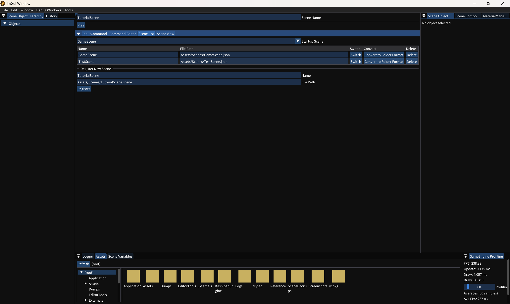

2. シーンを登録する
Scene ListウィンドウでTutorialSceneを登録し、起動時に読み込むシーンを指定します。
Scene Listを表示する
- ウィンドウを開くWindow›Scene List を有効にします。すでに表示されている場合はそのまま進みます。
- 登録名を入力する
Register New SceneのNameへTutorialSceneを入力します。 - 保存先を指定する
File PathへAssets/Scenes/TutorialScene.sceneを入力し、Registerを押します。 - 起動シーンを選ぶ上部の
Startup Scene一覧からTutorialSceneを選択します。

今すぐ開く場合はSwitch
登録行の
登録行の
Switchを押すと、そのシーンへの切り替えが予約され、次のフレームで編集対象が変わります。Startup Sceneは「次回起動時の最初のシーン」です。
登録結果を確認する
Scene Listで変更した内容は、既定ではAssets/KashipanEngine/SceneList.jsonへ保存されます。通常は直接編集する必要はありません。
{
"scenes": [
{
"name": "TutorialScene",
"filePath": "Assets/Scenes/TutorialScene.scene"
}
],
"startupScene": "TutorialScene"
}問題が起きたとき
| 状態 | 確認すること |
|---|---|
| Registerを押しても追加されない | 同じ名前が登録済みでないか、NameとFile Pathが空でないか確認する |
| Switch後に読み込めない | *.sceneフォルダー内にscene.jsonがあるか確認する |
| 次回起動時に別シーンになる | Startup SceneがTutorialSceneになっているか確認する |
コードから登録する特殊なケース
動的な登録が必要な場合は
動的な登録が必要な場合は
SceneManager::RegisterSceneFileを使用できます。通常の制作ではScene Listだけで完結します。詳しくはシーンのリファレンスを参照してください。